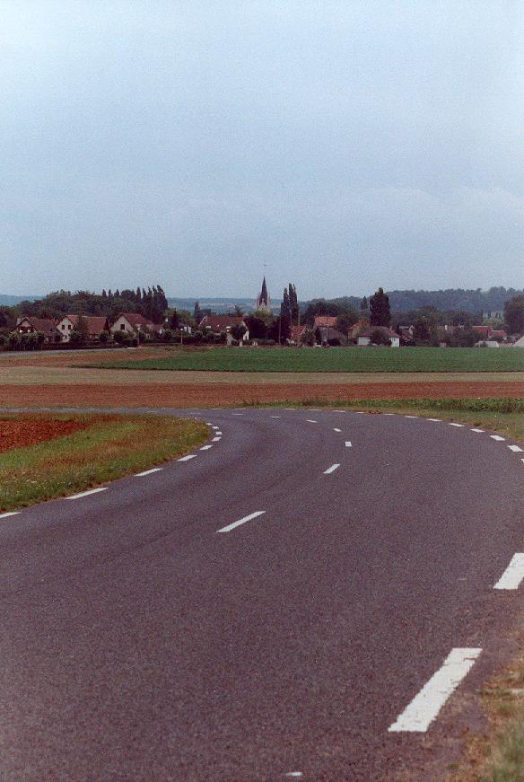
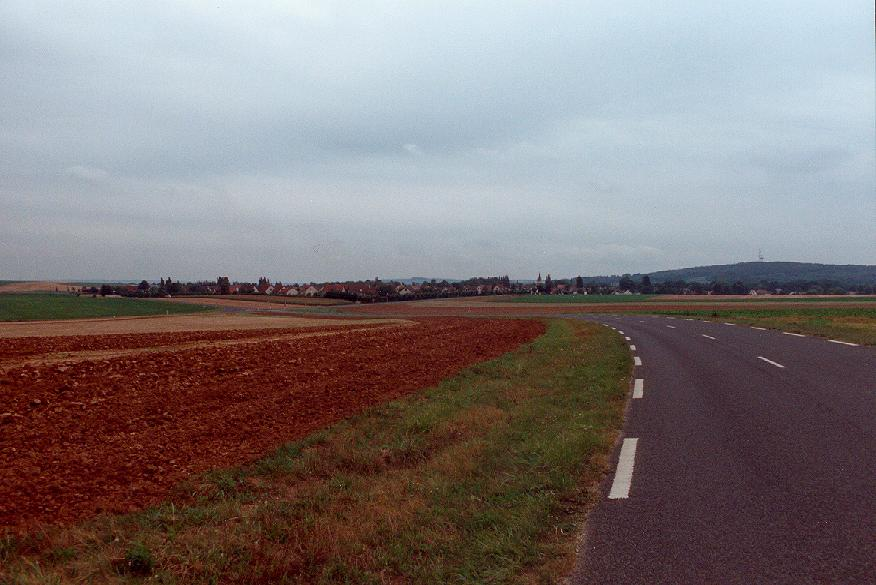

Click on corner names above to view photographs.
Bretelle Sud
|| Contents | Pits & Grandstands | Calvaire | Gueux | Bretelle Sud | Bretelle Nord | Muizon | RN31 | Thillois || Home ||
Click on corner names above to view photographs.
Return to racingcircuits.net's Historic Circuits Photo Archive Main Index

Bretele Sud from opposite direction. The village of Gueux is in the background.

Longer shot of Bretele Sud from opposite direction.
Update: The road between Gueux and Muizon is now closed for all traffic.
Photographs ©Luc Ghys. Reproduced here with kind
permission.
Updated information provided by Roelard Smit, July 2004